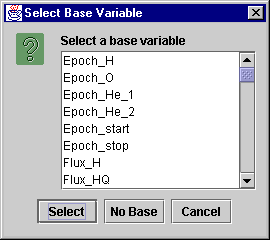
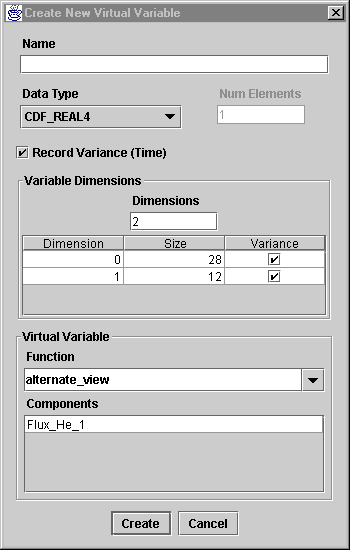
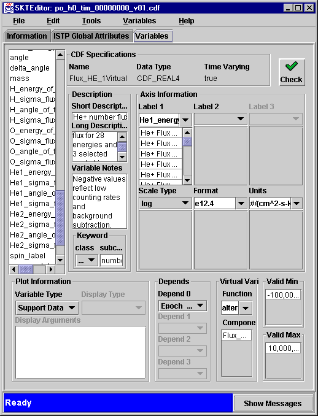
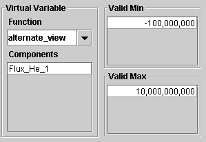

1. Click on New Virtual under the Variables menu. This will open the Select Base Variable window:

This window allows you to specify a base variable. Pertinent information can then be applied as default in the Create New Virtual Variable window.
2. Select Flux_He_1 and click on Select. The following window is displayed:

The top part of this window is the standard new variable dialog. the Virtual Variable section, requires the selection of a Function used to manipulate the base variable data and Components which include the base variable and possibly others, depending on the Function selected.
3. Fill in the Name Flux_He_1Virtual and click on Create to have your new virtual variable added to your CDF file.

The variable attributes have been defaulted to the base variable values.
Note the Virtual Variable component which has been dynamically added to the panel:
